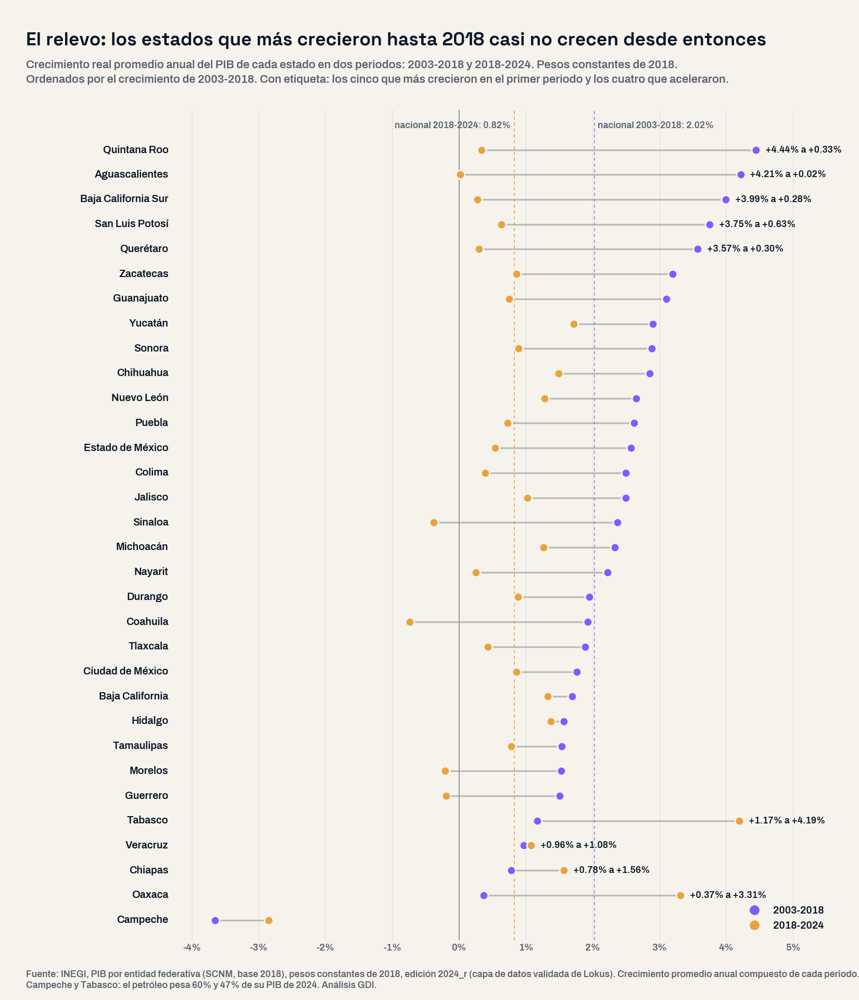
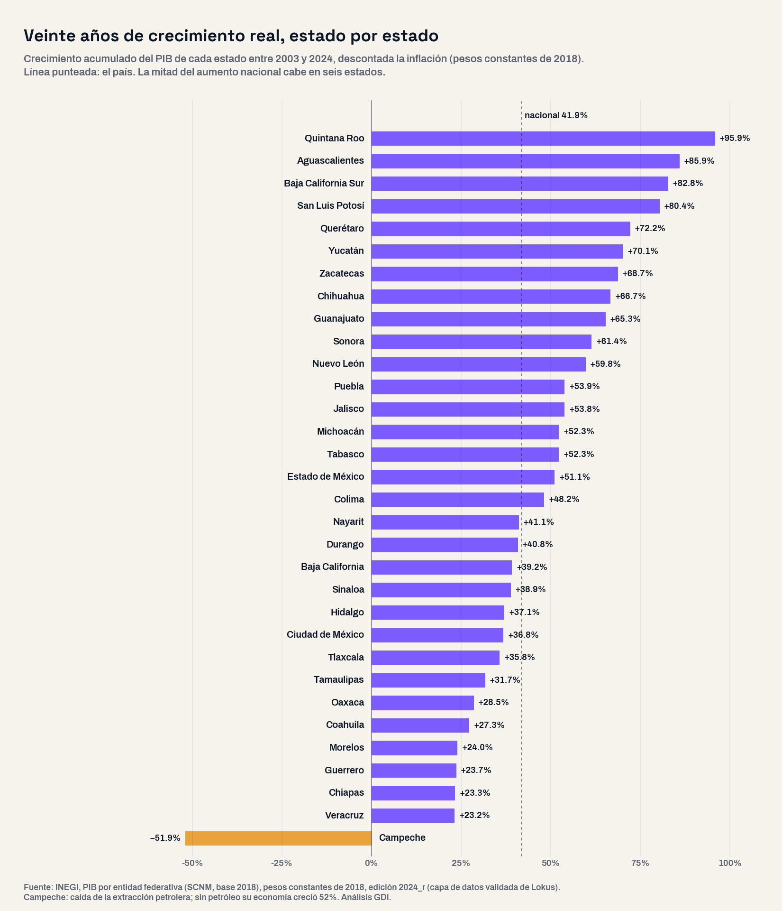

El PIB por entidad federativa que publica el INEGI es la única medición del crecimiento económico de cada estado en términos reales, es decir, descontada la inflación. La edición 2024 permite comparar 21 años en pesos constantes de 2018. La pregunta con la que arrancó este análisis fue abierta: ¿qué estados crecieron de verdad entre 2003 y 2024, en qué momento lo hicieron y qué tienen en común los que se quedaron atrás? Se ordenaron los 32 estados por su crecimiento real, sin preseleccionar regiones, y se revisó en cada uno qué sector explica el cambio.
Una precisión de método. En pesos corrientes la economía mexicana se multiplicó por 4.1 entre 2003 y 2024; en pesos constantes creció 41.9%. Todo lo que sigue está en pesos constantes, y donde el petróleo distorsiona el resultado, en Campeche y Tabasco, se muestra la economía con y sin extracción petrolera.
42% en 21 años, y 84% de ese aumento antes de 2018
El PIB del país pasó de 17.9 a 25.4 billones de pesos de 2018: un crecimiento promedio de 1.68% anual. Pero el ritmo no fue el mismo en todo el periodo. Entre 2003 y 2018 la economía creció 2.02% al año; entre 2018 y 2024, 0.82%. De los 7.5 billones que se sumaron en 21 años, 84 de cada 100 pesos llegaron antes de 2018 y el resto en los últimos seis años, que incluyen la caída de 2020 y su recuperación.
El crecimiento también se concentró. La mitad del aumento nacional cabe en seis estados: Ciudad de México, Estado de México, Nuevo León, Jalisco, Guanajuato y Chihuahua. 17 estados crecieron por encima del promedio nacional y 15 por debajo; el promedio lo jala hacia abajo Campeche, que perdió 51.9% de su PIB por la caída de la extracción petrolera. Sin petróleo, la economía campechana creció 52%.

El relevo: los cinco líderes de quince años se detuvieron
Entre 2003 y 2018, cinco estados crecieron a más del doble del ritmo nacional: Quintana Roo (4.44% anual), Aguascalientes (4.21%), Baja California Sur (3.99%), San Luis Potosí (3.75%) y Querétaro (3.57%). Desde 2018 ninguno de los cinco alcanza 1% anual. Aguascalientes produjo en 2024 prácticamente lo mismo que en 2018 (+0.1% en seis años); Quintana Roo creció 2.0%, Baja California Sur 1.7%, Querétaro 1.8% y San Luis Potosí 3.8%.
Lo que se detuvo no fue una sola cosa. En Aguascalientes, Baja California Sur y San Luis Potosí la construcción produjo en 2024 entre 38% y 50% menos que en 2018, y la manufactura, que había explicado 51% del crecimiento de Aguascalientes y 55% del de San Luis Potosí en los 21 años, apenas se movió: +1.2% en Aguascalientes y −0.3% en Querétaro. En Quintana Roo los hoteles y restaurantes produjeron en 2024 24 mil millones de pesos menos que en 2018, y el crecimiento que hubo vino de la construcción.
No es un fenómeno de cinco estados: 27 de los 32 crecen más lento desde 2018 que en los quince años anteriores. Solo cuatro aceleraron, y los cuatro están en el sur y el Golfo: Tabasco (1.17% a 4.19% anual), Oaxaca (0.37% a 3.31%), Chiapas (0.78% a 1.56%) y Veracruz (0.96% a 1.08%). En Tabasco, 74% del aumento vino de la minería petrolera; en Oaxaca, 66% de la construcción, que multiplicó por 2.7 su producción. Donde el crecimiento reciente descansa en manufactura, los estados son otros: Chihuahua (1.49% anual, 47% del aumento en manufactura), Hidalgo (1.37%), Baja California (1.32%) y Nuevo León (1.28%).
Alerta: cinco estados producen menos que en 2018
En el otro extremo hay estados cuya economía es hoy más chica que hace seis años. Coahuila produjo en 2024 4.4% menos que en 2018, y es el único estado industrial del país en esa situación: su manufactura cayó 6.9% en el periodo. Sinaloa perdió 2.3%, con caídas en la agricultura y la construcción; Morelos, 1.3%; Guerrero, 1.2%; y Campeche, 15.9%, por el petróleo. El indicador trimestral de actividad estatal del INEGI muestra que la tendencia continuaba en el primer trimestre de 2026: Coahuila −4.7% frente al mismo trimestre de 2025, Morelos −3.1%, Campeche −5.2%, y también Quintana Roo (−2.9%), Oaxaca (−2.8%) y Aguascalientes (−1.7%), con el país en +0.3%.
La convergencia que no llegó
Los estados con menor PIB por habitante son también los que menos crecieron en 21 años. Veracruz, Chiapas y Guerrero crecieron 23%, 23% y 24%: poco más de la mitad del ritmo nacional. Con la población que proyecta CONAPO para 2024, el PIB por habitante de Chiapas es de 64,821 pesos de 2018 al año y el de la Ciudad de México de 422,051: 6.5 veces más. La brecha no se cerró; en el mejor de los casos dejó de abrirse en los últimos seis años, cuando Oaxaca y Chiapas crecieron por encima del país. Pero lo hicieron con construcción y comercio, no con industria: la manufactura de Oaxaca produce 30% menos que en 2003 y la de Chiapas creció 2% en 21 años, contra 36% en el país.
La pobreza, medida por CONEVAL, bajó en los 32 estados entre 2016 y 2024, también en los que menos crecieron: en Chiapas pasó de 77.9% a 66.0% con una economía que creció 1.00% anual. Es un dato para observar, no una relación de causa: la reducción de pobreza de ese periodo no coincide con el mapa del crecimiento real. Ya habíamos encontrado que los estados más productivos no son los mejor pagados; este análisis muestra que tampoco los que más crecieron son los que hoy crecen.

| Estado | PIB 2024 (miles de millones de pesos de 2018) | Crecimiento real 2003-2024 | Anual 2003-2018 | Anual 2018-2024 | Actividad 2026T1 vs 2025T1 | Pobreza 2024 (CONEVAL) |
|---|---|---|---|---|---|---|
| Quintana Roo | 385 | +95.9% | +4.44% | +0.33% | −2.9% | 17.7% |
| Aguascalientes | 328 | +85.9% | +4.21% | +0.02% | −1.7% | 17.1% |
| Baja California Sur | 188 | +82.8% | +3.99% | +0.28% | +2.5% | 10.2% |
| San Luis Potosí | 579 | +80.4% | +3.75% | +0.63% | −1.8% | 30.4% |
| Querétaro | 622 | +72.2% | +3.57% | +0.30% | +0.7% | 16.3% |
| Yucatán | 404 | +70.1% | +2.90% | +1.72% | +2.1% | 26.6% |
| Zacatecas | 240 | +68.7% | +3.20% | +0.86% | +1.3% | 36.4% |
| Chihuahua | 932 | +66.7% | +2.85% | +1.49% | −1.0% | 15.1% |
| Guanajuato | 1,172 | +65.3% | +3.10% | +0.75% | +1.3% | 26.0% |
| Sonora | 825 | +61.4% | +2.88% | +0.89% | −0.2% | 14.1% |
| Nuevo León | 2,060 | +59.8% | +2.65% | +1.28% | +1.2% | 10.6% |
| Puebla | 887 | +53.9% | +2.62% | +0.73% | +2.7% | 43.4% |
| Jalisco | 1,865 | +53.8% | +2.49% | +1.03% | −1.2% | 18.6% |
| Michoacán | 683 | +52.3% | +2.33% | +1.26% | +1.7% | 34.3% |
| Tabasco | 603 | +52.3% | +1.17% | +4.19% | +3.3% | 34.8% |
| Estado de México | 2,317 | +51.1% | +2.57% | +0.54% | +1.5% | 31.2% |
| Colima | 157 | +48.2% | +2.50% | +0.39% | +4.0% | 15.0% |
| Nayarit | 158 | +41.1% | +2.22% | +0.25% | +1.0% | 23.5% |
| Durango | 326 | +40.8% | +1.95% | +0.88% | −0.8% | 27.9% |
| Baja California | 951 | +39.2% | +1.69% | +1.32% | −2.5% | 9.9% |
| Sinaloa | 516 | +38.9% | +2.37% | −0.38% | −1.2% | 17.0% |
| Hidalgo | 454 | +37.1% | +1.57% | +1.37% | +7.4% | 35.3% |
| Ciudad de México | 3,889 | +36.8% | +1.76% | +0.86% | +0.0% | 19.7% |
| Tlaxcala | 152 | +35.8% | +1.88% | +0.43% | +0.9% | 40.8% |
| Tamaulipas | 767 | +31.7% | +1.54% | +0.78% | +5.2% | 20.2% |
| Oaxaca | 466 | +28.5% | +0.37% | +3.31% | −2.8% | 51.6% |
| Coahuila | 924 | +27.3% | +1.93% | −0.74% | −4.7% | 12.4% |
| Morelos | 270 | +24.0% | +1.53% | −0.21% | −3.1% | 35.4% |
| Guerrero | 314 | +23.7% | +1.50% | −0.19% | +0.5% | 58.1% |
| Chiapas | 388 | +23.3% | +0.78% | +1.56% | +1.9% | 66.0% |
| Veracruz | 1,098 | +23.2% | +0.96% | +1.08% | +0.0% | 44.5% |
| Campeche | 475 | −51.9% | −3.65% | −2.85% | −5.2% | 36.7% |
Implicaciones para la gestión pública
1. Planear con crecimiento real, no nominal. Un plan estatal o municipal de desarrollo que mida su economía en pesos corrientes verá crecer todo: en 21 años el PIB nominal de cada estado se multiplicó por tres o por cuatro. El dato que sirve para fijar metas es el real, y para 27 estados ese dato dice que el ritmo de 2003-2018 ya no es la base. Nuestra guía del plan municipal de desarrollo parte de ese principio: el diagnóstico con la cifra correcta de su propio territorio.
2. Un motor no basta. Los cinco estados que se frenaron crecieron quince años apoyados en pocos sectores: la manufactura en Aguascalientes, San Luis Potosí y Querétaro; la construcción, los servicios inmobiliarios y el comercio en Quintana Roo; los hoteles y restaurantes en Baja California Sur. Se detuvieron cuando esos sectores dejaron de acelerar. Diversificar la base productiva es una decisión de política pública que toma años y se decide en los buenos.
3. La obra pública no sustituye a la base productiva. Oaxaca creció 21.6% en seis años, el segundo mayor aumento del país, y dos tercios vinieron de la construcción. Cuando la obra termina, lo que queda es la economía que había: una manufactura 30% más chica que en 2003. Convertir la infraestructura en actividad permanente es el reto de los gobiernos del sur en los próximos años.
4. Coahuila y Sinaloa necesitan un diagnóstico propio. Un estado industrial que produce menos que en 2018 y llega a 2026 con la actividad cayendo 4.7% anual no está en un ciclo normal. Los gobiernos estatal y municipales tienen en el PIB estatal, el indicador trimestral y el empleo formal del IMSS las tres series para ubicar en qué sector y desde cuándo.
Conclusión
El PIB estatal en pesos constantes no describe un país que dejó de crecer: México produce 42% más que en 2003. Describe un país cuyo mapa del crecimiento cambió de lugar. Los cinco estados que lideraron quince años llevan seis casi parados; los que aceleraron lo hicieron con petróleo y obra pública; cinco estados producen menos que en 2018, y la brecha entre el sur y el resto del país no se cerró. Para un gobierno estatal o municipal, la pregunta útil no es cuánto creció su economía en pesos corrientes, sino cuánto creció de verdad, desde cuándo se frenó y con qué sector piensa volver a crecer.
¿Cuánto creció de verdad la economía de tu estado?
En la plataforma de GDI puedes consultar el PIB de tu estado en pesos constantes y corrientes desde 1980, por sector de actividad, junto con el indicador trimestral de actividad, el empleo formal del IMSS, la medición de pobreza y las finanzas públicas, para diagnosticar tu territorio con fuentes oficiales integradas.
Explorar mi territorioPreguntas frecuentes
¿Cuánto creció la economía de México entre 2003 y 2024 en términos reales?
41.9%, de 17.9 a 25.4 billones de pesos de 2018, según el PIB por entidad federativa del INEGI: 1.68% anual en promedio. En pesos corrientes se multiplicó por 4.1, pero esa cifra incluye la inflación.
¿Qué estados crecieron más entre 2003 y 2024?
Quintana Roo (+95.9%), Aguascalientes (+85.9%), Baja California Sur (+82.8%), San Luis Potosí (+80.4%) y Querétaro (+72.2%). Los cinco crecieron entre 3.6% y 4.4% anual hasta 2018 y menos de 1% anual desde entonces.
¿Qué estados producen menos que en 2018?
Cinco: Campeche (−15.9%, por la caída petrolera), Coahuila (−4.4%), Sinaloa (−2.3%), Morelos (−1.3%) y Guerrero (−1.2%), en pesos constantes de 2018.
¿Qué estados aceleraron su crecimiento después de 2018?
Solo cuatro: Tabasco (4.19% anual, con 74% del aumento en minería petrolera), Oaxaca (3.31%, 66% en construcción), Chiapas (1.56%) y Veracruz (1.08%). Los otros 27 estados crecen más lento que en 2003-2018 y Campeche sigue en caída.
Datos técnicos
Fuentes: INEGI, Sistema de Cuentas Nacionales de México, Producto Interno Bruto por Entidad Federativa, base 2018, edición 2024 revisada (valores a precios constantes de 2018 y corrientes, total y por sector SCIAN); INEGI, Indicador Trimestral de la Actividad Económica Estatal (ITAEE), serie original, primer trimestre de 2026; CONEVAL, medición multidimensional de la pobreza estatal 2016 y 2024; CONAPO, proyecciones de población 2024 (solo para el PIB por habitante); IMSS, puestos de trabajo afiliados, enero de 2020 y julio de 2026. Todas consultadas en la capa de datos validada de Lokus.
Método: universo completo de 32 estados ordenado por el crecimiento real del PIB total. Crecimiento anual = tasa promedio anual compuesta entre los años extremos de cada periodo (2003-2018, 2018-2024 y 2003-2024). La contribución de cada sector se calcula sobre el cambio del valor agregado bruto sectorial (sin impuestos netos a los productos) entre los mismos años. «Sin petróleo» = PIB total menos minería petrolera (SCIAN 21-1). El PIB por habitante de 2024 divide el PIB en pesos de 2018 entre la población que proyecta CONAPO para 2024: es un cruce de dos fuentes y una proyección, no una medición. El indicador trimestral es un índice de volumen físico, no PIB, y se compara contra el mismo trimestre del año anterior por ser serie original.
Advertencias metodológicas: el PIB estatal es anual y llega con rezago; 2024 es el último año disponible. Las cifras de 2018 a 2024 incluyen la caída de 2020 y su recuperación. La serie por sector registra desde 2021 una caída fuerte de los servicios de apoyo a los negocios (SCIAN 56) en todos los estados, que coincide con la reforma en materia de subcontratación; se muestra como está en la fuente y no se interpreta como cierre de empresas. La pobreza se cita como característica del estado, no como efecto del crecimiento. El empleo del IMSS es formal privado y se registra por domicilio del patrón.
Clasificación SCIAN: sectores del PIB estatal: 21 minería (21-1 petrolera, 21-2 no petrolera), 23 construcción, 31-33 industrias manufactureras, 43 comercio al por mayor, 46 comercio al por menor, 48-49 transportes, 52 servicios financieros, 53 servicios inmobiliarios, 56 servicios de apoyo a los negocios, 72 alojamiento y preparación de alimentos.
Nota: el análisis partió de una pregunta abierta y del universo completo de estados ordenado por su crecimiento real; los grupos y el patrón emergen de los datos, no de una clasificación previa.
Análisis: GDI — Gobierno Digital e Innovación · Fecha de análisis: 28 de septiembre de 2026 · gobiernodigitaleinnovacion.com